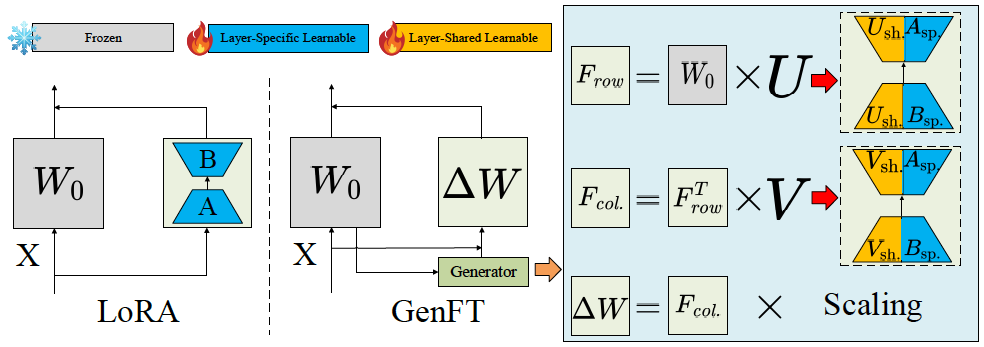
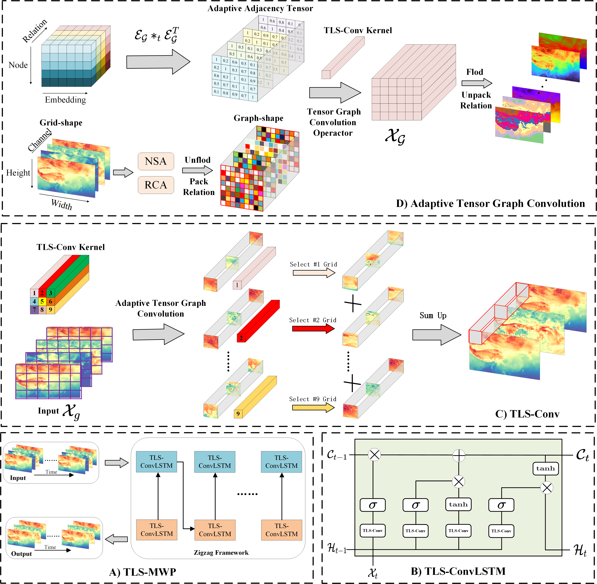
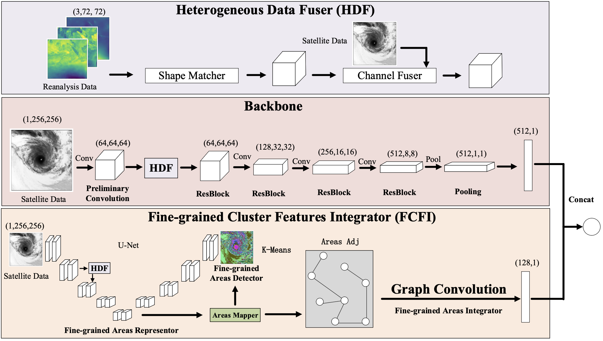
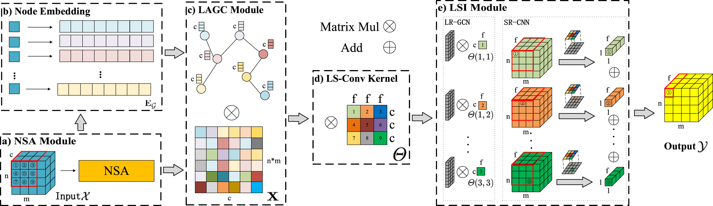
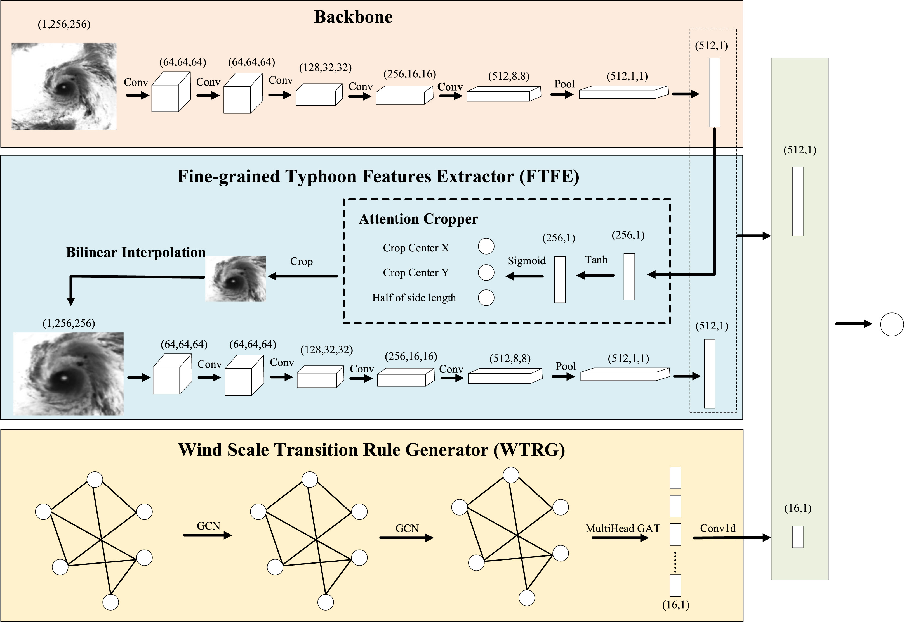
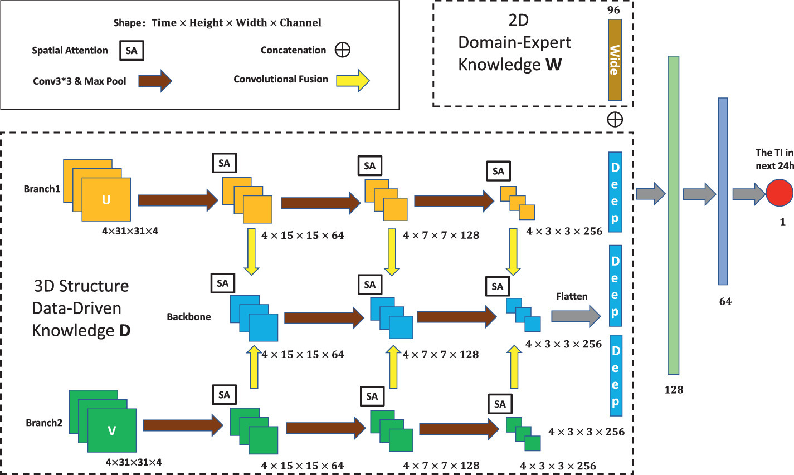
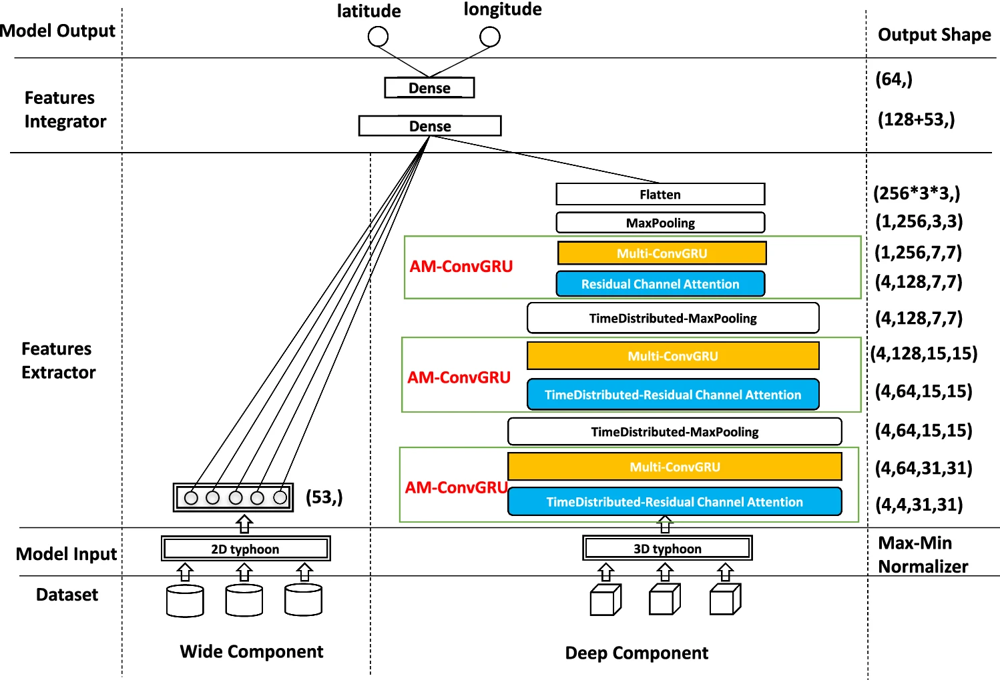
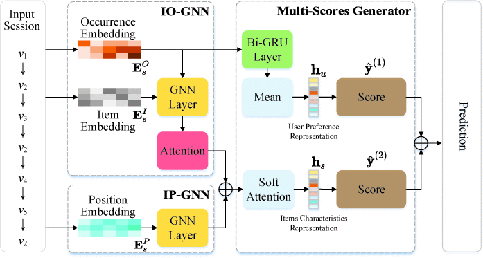

Pretrained Foundation Models (PFMs) have transformed numerous applications by enabling efficient adaptation to customized tasks. Parameter-Efficient Fine-Tuning (PEFT) has emerged as a resource-efficient alternative to full fine-tuning, especially leveraging reparameterized weights $\Delta W$ to adapt models for downstream tasks. However, a critical yet underexplored question remains: can we utilize well-pretrained weights $W_0$ to guide the update of task-specific $\Delta W$, avoiding inefficient training it from scratch? To end this, we propose Generative Parameter-Efficient Fine-Tuning (GenFT), a novel method that extracts structured, transferable information from $W_0$ for efficient $\Delta W$ training. To extract row and column structure information, GenFT applies row and column transformations to distill essential patterns from $W_0$. A tailored policy further decomposes $\Delta W$ into layer-shared and layer-specific components, balancing information reuse and individualized flexibility. GenFT is simple yet effective, achieving superior performance across CV and NLP tasks. Extensive experiments on VTAB-1K, FGVC, and GLUE benchmarks demonstrate that GenFT outperforms state-of-the-art PEFT methods, offering a new perspective for efficient model adaptation.

Weather prediction plays a crucial role in human development. Recently, deep learning has demonstrated promising prospects in weather forecasting by integrating convolutional neural networks (CNNs) and recurrent neural networks (RNNs). However, two main challenges still exist in multiple weather condition prediction. The first challenge considers multiple weather condition correlations in predictions. The second challenge is how to model long- and short-range spatial dependencies under multiple weather conditions. A novel operator named as tensor-based long- and short-range convolution (TLS-Conv) is proposed to address these challenges. Within this operator, the node & relation attention is utilized to identify the contributions of spatial grid points and weather conditions for prediction. Additionally, the adaptive tensor graph convolution (ATGCN) is tailored to dynamically capture long-range spatial dependencies within multiple weather conditions. Finally, the traditional convolution is integrated with the ATGCN to model both long- and short-range spatial dependencies and weather condition correlations. Building upon the TLS-Conv, the tensor-based long- and short-range convolution for multiple weather prediction (TLS-MWP) model is proposed to predict multiple weather conditions. Extensive experiments are conducted under real-world weather conditions to evaluate its performance. These results unequivocally demonstrate that TLS-MWP surpasses previous methods.

A tropical cyclone is a highly destructive extreme weather phenomenon. Estimating intensity of a tropical cyclone can help provide early warnings, guiding specific disaster defense measures. However, two main challenges hinder performance improvement. The first challenge is how to combine heterogeneous tropical cyclone data into a latent space so that the model can leverage the cloud structure of satellite imagery and the comprehensive meteorological information from reanalysis and forecast data for intensity estimation. The second challenge lies in detecting multiple pseudo fine-grained areas for the final estimation, since tropical cyclones are highly diverse extreme weather phenomena. Neglecting any of these pseudo fine-grained areas or relying solely on a single one can potentially result in subpar estimation performance. To address challenges mentioned above, a fine-grained heterogeneous data fusion framework named FHDTIE is proposed. Two key components in this framework can address the aforementioned challenges. One component is the Heterogeneous Data Fuser (HDF), which offers shape matching and channel fusing strategies for heterogeneous data fusion. The other component is called Fine-grained Cluster Features Integrator (FCFI). It utilizes a clustering method to identify multiple pseudo fine-grained areas. Within these areas, the U-Net is used to automatically learn pseudo fine-grained area representations, and then the Graph Neural Network handles information interaction across these representations. Extensive experiments were conducted to demonstrate the robustness and superiority of the proposed fine-grained heterogeneous data fusion framework.

The near-surface temperature prediction (NTP) is an important spatial–temporal forecast problem, which can be used to prevent temperature crises. Most of the previous approaches fail to explicitly model the long- and short-range spatial correlations simultaneously, which is critical to making an accurate temperature prediction. In this study, both long- and short-range spatial correlations are captured to fill this gap by a novel convolution operator named Long- and Short-range Convolution (LS-Conv). The proposed LS-Conv operator includes three key components, namely, Node-based Spatial Attention (NSA), Long-range Adaptive Graph Constructor (LAGC), and Long- and Short-range Integrator (LSI). To capture long-range spatial correlations, NSA and LAGC are proposed to evaluate node importance aiming at auto-constructing long-range spatial correlations, which is named as Long-range aware Graph Convolution Network (LR-GCN). After that, the Short-range aware Convolution Neural Network (SR-CNN) accounts for the short-range spatial correlations. Finally, LSI is proposed to capture both long- and short-range spatial correlations by intra-unifying LR-GCN and SR-CNN. Upon the proposed LS-Conv operator, a new model called Long- and Short-range for NPT (LS-NTP) is developed. Extensive experiments are conducted on two real-world datasets and the results demonstrate that the proposed method outperforms state-of-the-art techniques.

Tropical Cyclone Intensity Estimation (TIE) is a fundamental study subject for tropical cyclone development, flood or landslide avoidance, etc. Despite considerable efforts, two main challenges remain unresolved in this critical endeavor. The first challenge is that the TIE task is frequently conducted as a coarse-grained recognition problem rather than a fine-grained one. The second challenge is that the prediction fails to consider general wind speed information. To conquer these two challenges, we offer a novel model, namely Tropical cyclone intensity estimation from a Fine-grained perspective with the Graph convolution neural Network (TFG-Net). It is composed of three key components, viz., the Backbone, the Fine-grained Tropical cyclone Features Extractor (FTFE), and the Wind Scale Transition Rule Generator (WTRG), which aim at extracting general spatial features, subtle spatial features, and general wind speed information, respectively. To validate the proposed method, extensive experiments on a well-known real-world tropical dataset named GridSat were carried out. Following the standard benchmark task setting that the model estimates the wind speed from a given satellite image, the proposed TFG-Net reaches 11.12 knots in the RMSE metric, which outperforms 33.33%, 2.54% to the traditional method and the state-of-the-art deep learning method, respectively.

A typhoon is a destructive weather system that can cause severe casualties and economic losses. Typhoon intensity (TI) is a measurement to evaluate its ruinous degree. Hence, typhoon intensity prediction is an important research problem and many methods have been proposed. However, most of the existing approaches have very limited capability to combine the 2D Typhoon Structure Domain-expert Knowledge (2D-TSDK) and the 3D Typhoon Structure Data-driven Knowledge (3D-TSDK) for the TI prediction. To address this issue, this paper proposes a spatio-temporal deep learning method named Spatial Attention Fusing Network (SAF-Net). The designed model aims to fuse the 2D-TSDK and the 3D-TSDK by developing a specific Wide & Deep framework. In the data-driven component, a special Spatial Attention (SA) module is designed to automatically select high-response wind speed areas and embedded into a three-branch CNN to exploit the 3D-TSDK. Then, the Wide & Deep framework integrates the 2D-TSDK and the 3D-TSDK for the TI prediction. Comprehensive experiments have been conducted on a real-world dataset, and the result shows that the proposed method outperforms state-of-the-art typhoon intensity prediction methods.

Typhoons are one of the most destructive types of disasters. Several statistical models have been designed to predict their paths to reduce damage, casualties, and economic loss. To further increase prediction accuracy, two key challenges are (1) to extract better nonlinear 3D features of typhoons, which is hard due to their complex high-dimensional properties, and (2) to combine suitable 2D and 3D features in a proper way to improve predictions. To address these challenges, this paper presents a novel spatio-temporal deep learning model named Attention-based Multi ConvGRU (AM-ConvGRU). To automatically select high response isobaric planes of typhoons when considering their whole 3D structures, AM-ConvGRU leverages the Residual Channel Attention Block (RCAB). Furthermore, it integrates a novel model named Multi-ConvGRU to extract large-scale nonlinear spatial features of typhoons. Moreover, the approach relies on a Wide & Deep framework to fuse the traditional Generalized Linear Model (GLM) with the proposed AM-ConvGRU model. To evaluate the designed approach, extensive experiments have been conducted using real-world typhoons data from the Western North Pacific (WNP) basin obtained from both the China Meteorological Administration (CMA) dataset and the EAR-Interim dataset maintained by the European Centre for Medium-Range Weather Forecasts (ECMWF). Results show that the proposed method outperforms state-of-the-art deep learning typhoon prediction methods.

Session-Based Recommendation (SBR) is a spotlight research problem. Although many efforts have been made, challenges still exist. The key to unlocking this shackle is the user intention, an intuitive but hard-to-model concept in the anonymous session. Unlike previous research, we suggest mining potential user intention by counting the number of item occurrences in a user session and considering the long interval between item re-interactions. Beyond these, we take user preference, a biased user intention, into account in the prediction stage. Forming these together, we propose a model named user Intention aware Graph Neural Network (Int-GNN) aiming at capturing user intention. Extensive experiments have been conducted on three real-world datasets, and the results show the superiority of our method.